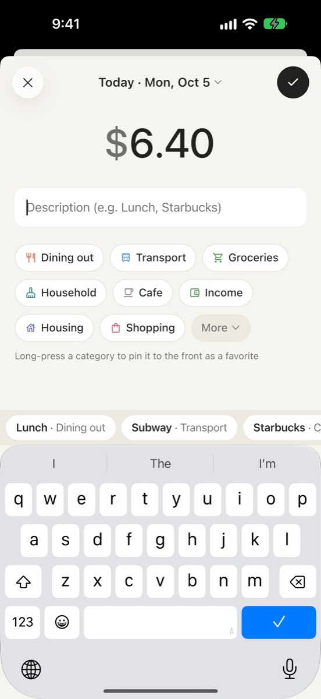
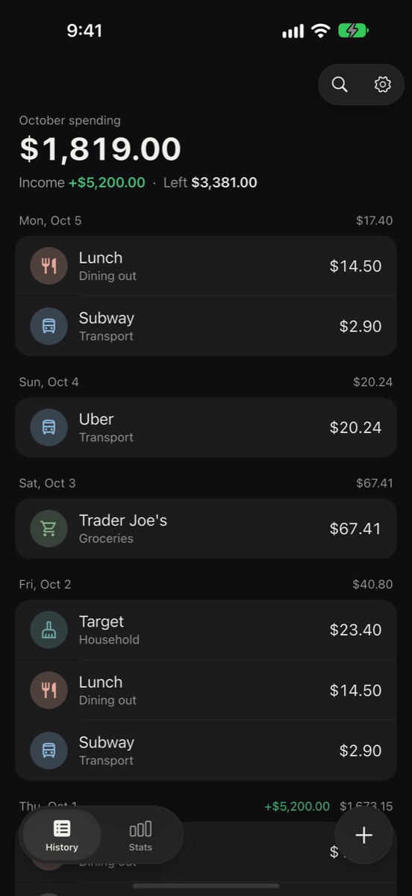

Know what you spend.
Keep the rest.
Log spending in seconds. No sign-up, no ads, and every entry stays on your phone.
You know what you earn.
Do you know what you spend?
Paying by card makes spending easy to lose track of. margin brings it back, one quick entry at a time.
Spent this month
$0.00
Every entry updates what you’ve spent this month. That’s the whole idea.
Built so you keep logging.
You only know what you spend if you write it down every time. Most people quit budgeting apps because that’s a chore. margin focuses on three things that make it easy to keep going.
Amount, note, category. Done in seconds.
If logging takes effort, you stop doing it. So an entry is one screen and a few taps.
- 1Straight to the amountThe entry screen opens with the keypad up, ready for a number.
- 2Categories one tap awayYour favorites sit up front. Long-press a category to pin it.
- 3Past entries autocompleteTap “Lunch · Dining out” and it’s saved, note and category included.
Home Screen and Lock Screen widgets, and Control Center on iOS 18, open the entry screen in one tap.

Open it. See this month’s spending.
No account and no setup. The first and biggest number you see is what you’ve spent this month.
- 1Spending, front and centerIncome and what’s left sit quietly below. The number you need comes first.
- 2Grouped by dayEvery day shows its own total, so a big day stands out.
- 3The + button never movesLog from the home screen with one thumb.
Want more? Stats by category, a yearly table, and search that understands “September” or “yesterday”.
Nobody else sees it, so you can be honest.
You only see your real spending if you write down all of it, even the parts you’d rather not. So margin makes no network requests. No account, no ads, no analytics.

Start with your next coffee.
Support
Questions or ideas? Email us at
minjaegil05@gmail.com
Where is my data stored?
Everything stays on your device. There is no server or account, so not even the developer can see it.
Can I move my data to a new device?
Use Settings → Export data to save a file, then Settings → Import data on the new device. If iCloud Backup is on, restoring a backup also brings it over.
How do I add a widget?
Touch and hold your Home Screen or Lock Screen, tap Edit → Add Widget, and choose margin. Tapping it opens the entry screen right away.